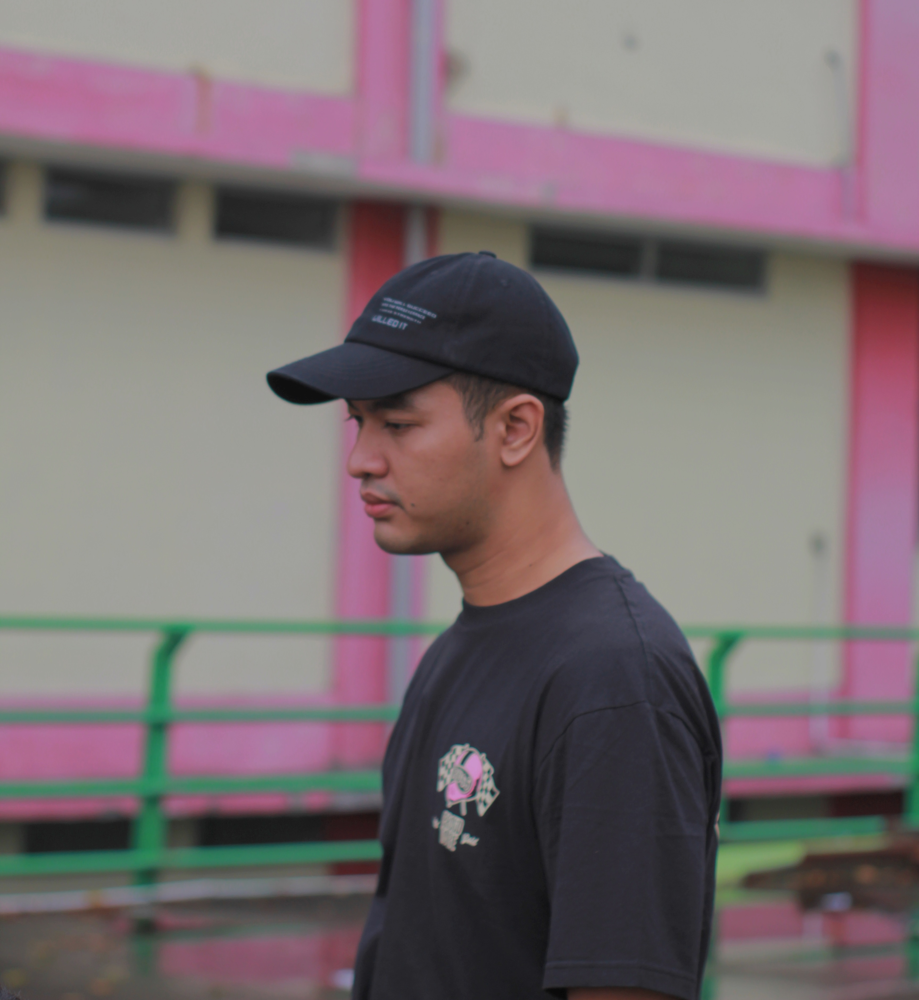

Kenalin Saya Rama Dhaniaji Refin, Biasa di sapa dengan Refin, Saya seroang mahasiswa yang sedang belajar Html & Css. Ini adalah web buatan saya dengan tangan saya sendiri yang menggunakan html & Css saja. Web ini walaupun terlihat simpel tapi lumayan uwah tantangannya haha. Tapi gapapa saya senang dan enjoy banget bro belajar coding itu apalagi Css yang paling saya suka karna di css ini kita bisa desain sesuka hati kita lah pokoknya, guna untuk mempercantik web web yang kita buat. Salam kenal ya.... :D
ABOUT ME
